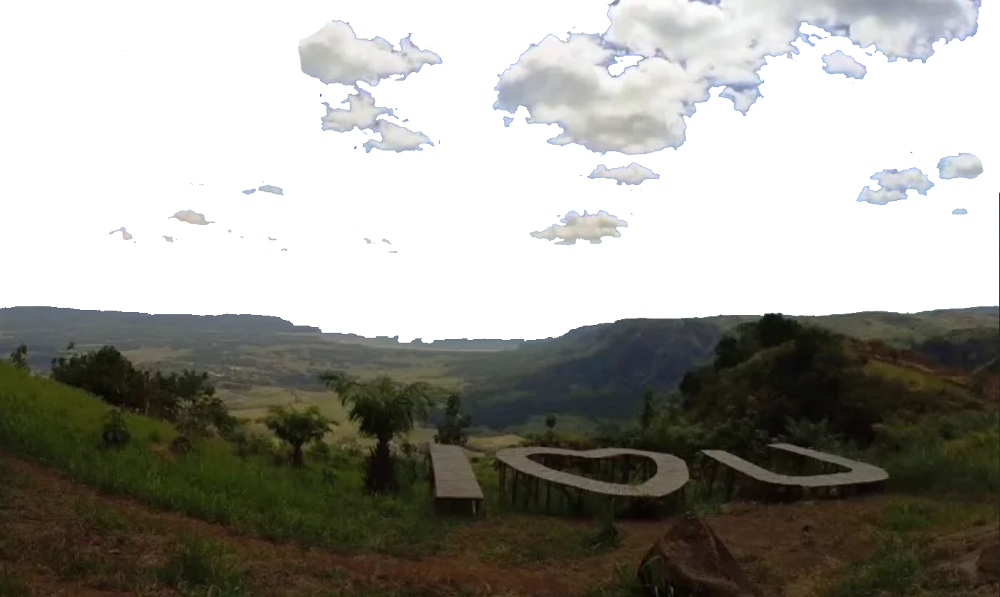
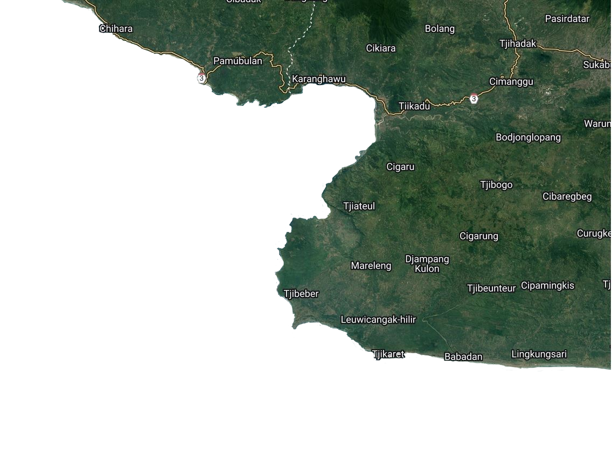
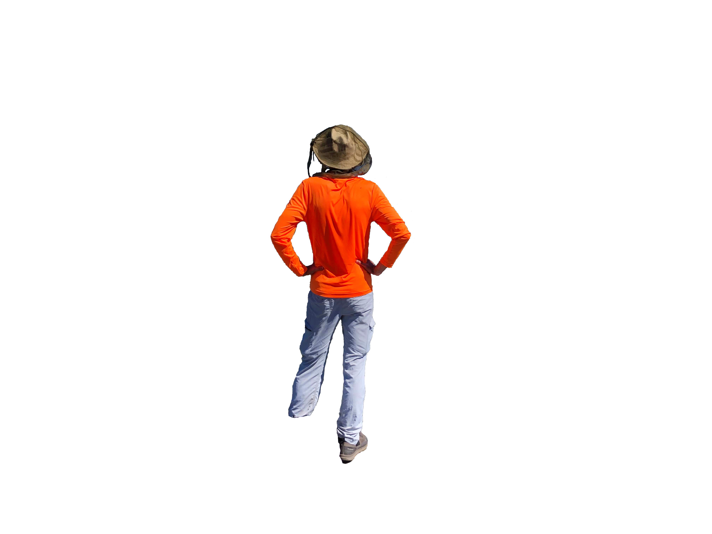
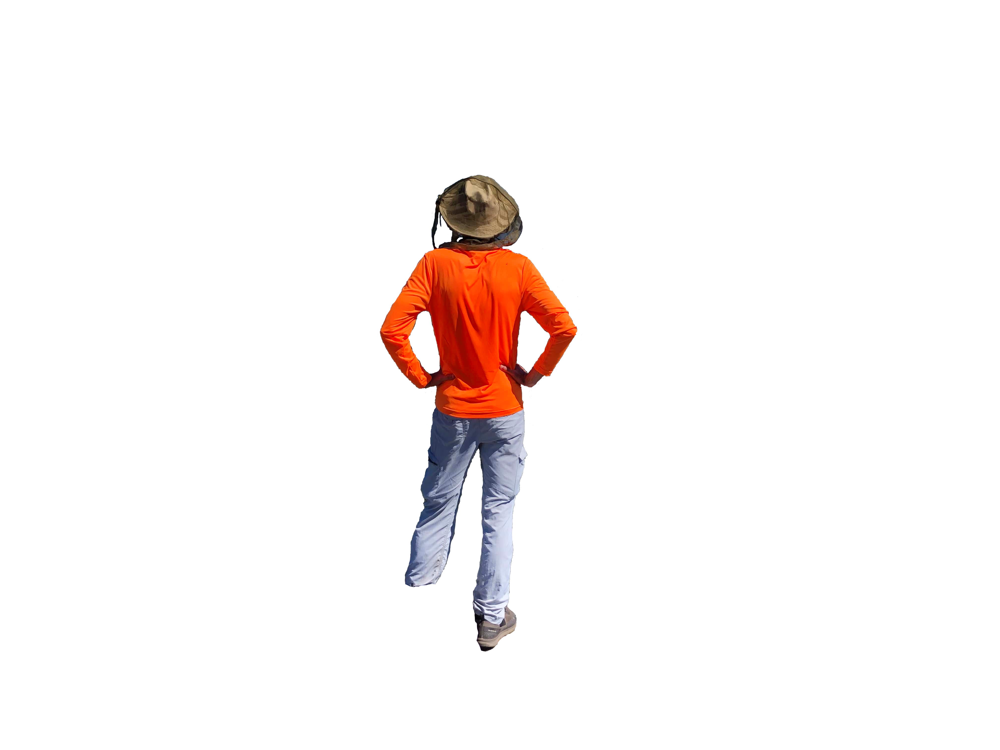

geological
jalur geowisata 4 ciletuh palabuhanratu
Geopark Ciletuh
Bagian selatan geopark ciletuh memiliki bentang alam yang sangat unik dan langka, yaitu berupa bentuk daratan tinggi dengan lembah berbentuk tapal kuda yang terbuka ke arah laut sehingga membentuk seperti panggung alam
Amfiteater ini terbentuk karena adanya proses geologi berupa sesar normal yang diikuti oleh sebuah longsoran yang besar karena gaya vertikal lebih besar dari gaya horizontal. Lembah amfiteater dipenuhi oleh keindahan hamparan sawah.
Keindahan amfiteater dan Teluk Ciletuh dapat dilihat dari daerah Panenjoan di Desa Tamanjaya, Pamoyanan di Desa Ciemas, Puncak Tugu di Desa Mekarjaya, Puncak darma dan Cikalapa di Desa Girimukti.

cikalapa

puncak darma
puncak tugu

panenjoan
 cikalapa 

View Point Pamoyanan, Mekarjaya
Pemandangan indah ini dapat dilihat dari Pamoyanan, Desa Mekarjaya. Yang dimana dapat ditempuh dengan mobil 4 Wheel Drive (4WD) ataupun sepeda motor dengan waktu tempuh 30 menit dan melalui jalan berbatu dari jalan utama Desa Tamanjaya